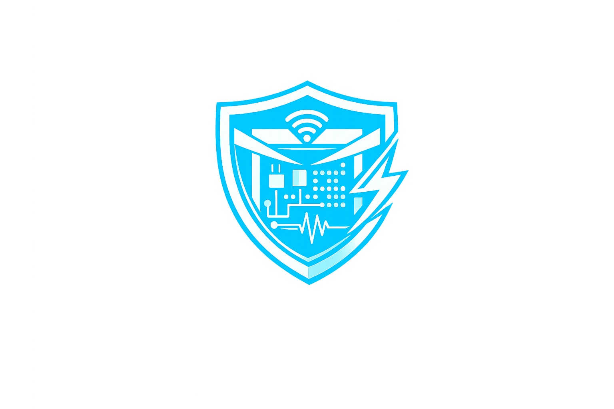

Sistema de detección de anomalías en cuadros eléctricos
Nodo central de monitorización para supervisar el estado del sistema, visualizar variables críticas y facilitar el diagnóstico de incidencias.

Esta interfaz forma parte del entorno de demostración del sistema embebido y permite presentar de forma clara los distintos módulos de supervisión.
Su objetivo es apoyar la detección temprana de comportamientos anómalos, mejorar la visibilidad operativa y facilitar la revisión técnica.